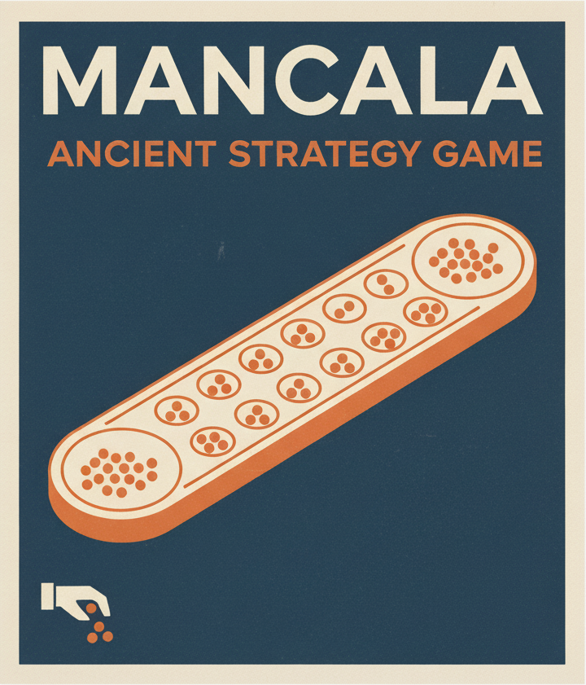

I'm Siddhartha Biswas, and I build things that answer a question I actually have. Most of what's below started that way: a game I wanted to play against a computer, a dataset I wanted to see plotted, or a claim I wanted to check for myself.
The projects here span game AI (Dou Shou Qi, Mancala), environmental data visualization with NOAA and ECOSTRESS satellite records, and most recently StockTest, a backtesting simulator that asks whether a stock strategy would really have beaten the market once taxes and trading costs are taken out. It runs entirely in your browser — no server, no data leaving your machine. I mostly work in Python, TypeScript and React.